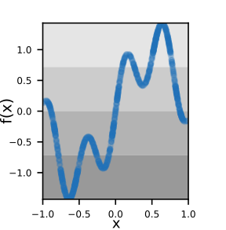
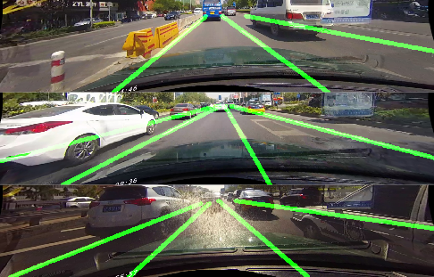

|
Postdoc, Intelligent Vehicles Group, 3mE, TUDelft. Working with Prof. Dariu M. Gavrila and Dr. Holger Caesar. PhD from Pattern Recognition & Bioinformatics, TUDelft (2022). Worked with Dr.Jan van Gemert and Dr. Silvia-Laura Pintea.
A dedicated, creative, hands-on researcher on Highly Automated Vehicles. Email / Google Scholar / Github / LinkedIn / CV |
{kind=link}
|
I am enthusiastic about data-efficient learning by pre-wiring deep networks with generic innate priors. My research is about re-parameterizing old-school feature engineering for end2end learning, where inductive knowledge no longer needs to be learned from big data. I have been working on a variety of tasks on 2D/3D scene parsing, industrial inspection and autonomous driving. The ultimate goal is to better understand the man-made world without relying on large manually labeled datasets. |
|
13/07/2023 Our submission to ICCV'23 got accepted! A step towards understanding why classification helps regression. 26/06/2023 Nafie successfully defended his master thesis: BladeNeRF. BladeNeRF. Cum laude! 19/10/2022 I am an outstanding reviewer, ECCV'22! 01/10/2022 Postdoc at the Intelligent Vehicles Group, 3mE, TUDelft. 30/09/2022 Our submission to BMVC'22 on mirror symmetries got accepted! 21/05/2022 I am an outstanding reviewer, CVPR'22! 25/04/2022 I have successfully defended my phd dissertation! 03/03/2022 Our submission to CVPR'22 on vanishing points got accepted! 01/01/2022 New project with an industrial partner: computer vision for aircraft engine inspection. 18/08/2021 Our submission to ICCV'21 workshop (Deep Learning for Geometric Computing): Best student paper award! 23/07/2021 ICCV'21 workshop: 2nd Visual Inductive Priors for Data-Efficient Deep Learning Workshop, 12/07/2021 Congrats to Andrea on defending his master thesis! 26/05/2021 Our submission to ICIP'21 got accepted! 01/10/2020 Congrats to Kang Lang on defending his master thesis! 23/08/2020 ECCV'20 workshop: 1st Visual Inductive Priors for Data-Efficient Deep Learning Workshop, 04/07/2020 Our submission to ECCV'20 on wireframe parsing got accepted! |
|
| |
 |
Yancong Lin PhD dissertation, 2022 Key words: geometric priors, wireframes, vanishing points, polygons, planes. |
|  |
Silvia-Laura Pintea, Yancong Lin, Jouke Dijkstra, Silvia-Laura Pintea, Jan van Gemert ICCV, 2023 arXiv / Code For a regression task, if the data sampling is imbalanced, then add a classification loss. |
|
Yancong Lin, Ruben Wiserma, Silvia-Laura Pintea, Klaus Hildebrandt, Elmar Eisemann, Jan van Gemert CVPR, 2022 arXiv / Code Hough Transform and Gaussian sphere priors for data-efficient and domain-robust vanishing point detection. |
|
 |
Yancong Lin, Silvia-Laura Pintea, Jan van Gemert BMVC, 2022 arXiv / Code Detecting 3D mirror plane from a single image, using feature correlations, mirroring, multi-scale spherical convs. |
|
Andrea Alfieri, Yancong Lin, Jan van Gemert ICCV Workshop (Best student paper!), 2021 arXiv Exploit auto-regressive and parallel transformers in predicting collections of points (polygons). |
|
|  |
Yancong Lin, Silvia-Laura Pintea, Jan van Gemert ICIP, 2021 Code / arXiv Exploit lane representations in the Hough space from unlabel data. |
 |
Yancong Lin, Silvia-Laura Pintea, Jan van Gemert ECCV, 2020 Code / arXiv Reduce data dependency by adding line priors through a trainable Hough transform module. |
 |
Yancong Lin, Jiachen Yang, Wen Lu, Qinggang Meng, Zhihan Lv, Houbing Song IEEE Journal of Selected Topics in Signal Processing, 2016 Stereo image quality assessment using binocular vision models and low-level features. Core contribution of master thesis. |
|
Template from Jon Barron. |